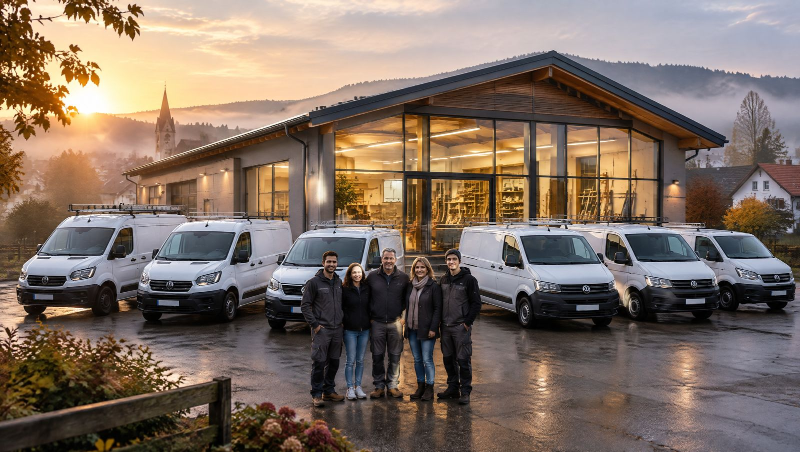

<title>Route bis 30</title>
<meta name="description" content="Mein Visionboard: vom Abi über Gebirgsjäger, Asien und Meister bis zum eigenen Betrieb, der ersten Million und dem ersten Porsche mit 30.">
<link rel="preconnect" href="https://fonts.googleapis.com">
<link rel="preconnect" href="https://fonts.gstatic.com" crossorigin>
<link rel="stylesheet" href="https://fonts.googleapis.com/css2?family=Big+Shoulders+Display:wght@700;800;900&family=IBM+Plex+Mono:wght@500&family=Schibsted+Grotesk:ital,wght@0,400;0,500;0,700;1,400&display=swap">
<style>
  /* Bewusst nur ein Look: Nacht am Berg, damit die Bilder leuchten. */
  :root {
    color-scheme: dark;
    --nacht: #0b1316;
    --nacht-2: #121d21;
    --nacht-3: #1a282d;
    --firn: #eef1ec;
    --nebel: #a3b1b0;
    --linie: #2a3a3f;
    --morgenrot: #ff8f4a;
    --gold: #e9c46a;

    /* Farben der Etappen, gleich in Zeitleiste und Kapiteln */
    --c-heim: #f2b36b;
    --c-kaserne: #8fb3c9;
    --c-dubai: #e3c28b;
    --c-asien: #3cc9b9;
    --c-ausbildung: #d9864f;
    --c-meister: #f0a86e;
    --c-betrieb: #ffbf52;
    --c-schweiz: #ef5b5b;
    --c-ziel: #e9c46a;

    --display: "Big Shoulders Display", "Oswald", "Arial Narrow", Impact, sans-serif;
    --text: "Schibsted Grotesk", "Helvetica Neue", Arial, sans-serif;
    --mono: "IBM Plex Mono", ui-monospace, "SFMono-Regular", Menlo, monospace;

    --rand: clamp(16px, 4vw, 48px);
    --breite: 1180px;
  }

  * { box-sizing: border-box; }
  html { background: var(--nacht); }
  body {
    margin: 0;
    background: var(--nacht);
    color: var(--firn);
    font-family: var(--text);
    font-size: 17px;
    line-height: 1.6;
    -webkit-font-smoothing: antialiased;
  }
  img { max-width: 100%; display: block; }
  a { color: inherit; }
  :focus-visible { outline: 2px solid var(--morgenrot); outline-offset: 3px; }

  .innen { max-width: var(--breite); margin-inline: auto; padding-inline: var(--rand); }

  .etikett {
    font-family: var(--mono);
    font-size: 12px;
    letter-spacing: 0.12em;
    text-transform: uppercase;
    color: var(--nebel);
  }

  h1, h2, h3 {
    font-family: var(--display);
    font-weight: 900;
    text-transform: uppercase;
    line-height: 0.9;
    letter-spacing: 0.005em;
    margin: 0;
    text-wrap: balance;
  }

  /* ---------- Hero ---------- */
  .hero {
    position: relative;
    min-height: clamp(560px, 88svh, 980px);
    display: flex;
    align-items: flex-end;
    overflow: hidden;
    isolation: isolate;
  }
  .hero > img {
    position: absolute; inset: 0;
    width: 100%; height: 100%;
    object-fit: cover; object-position: 50% 40%;
    z-index: -2;
    animation: aufgang 2.4s cubic-bezier(.2,.7,.2,1) both;
  }
  .hero::after {
    content: "";
    position: absolute; inset: 0; z-index: -1;
    background:
      linear-gradient(180deg, rgba(11,19,22,.55) 0%, rgba(11,19,22,0) 28%, rgba(11,19,22,0) 42%, rgba(11,19,22,.85) 78%, var(--nacht) 100%);
  }
  @keyframes aufgang { from { transform: scale(1.08); filter: brightness(.6); } to { transform: none; filter: none; } }
  .hero .innen { width: 100%; padding-block: 24px 40px; }
  .hero-kopf {
    position: absolute; top: 0; left: 0; right: 0;
    display: flex; justify-content: space-between; gap: 12px; flex-wrap: wrap;
    padding: 20px var(--rand);
  }
  .hero h1 {
    font-size: clamp(5.2rem, 19vw, 15rem);
    line-height: 0.82;
    display: flex; align-items: baseline; gap: 0.12em; flex-wrap: wrap;
  }
  .hero h1 .pfeil { color: var(--morgenrot); font-weight: 800; font-size: 0.62em; }
  .hero h1 .dreissig {
    background: linear-gradient(95deg, var(--morgenrot), var(--gold));
    -webkit-background-clip: text; background-clip: text; color: transparent;
  }
  .hero .unterzeile {
    font-family: var(--display);
    font-weight: 800;
    font-size: clamp(1.5rem, 4.2vw, 2.7rem);
    text-transform: uppercase;
    line-height: 1;
    margin: 14px 0 0;
    max-width: 22ch;
    text-wrap: balance;
  }
  .hero .lead { max-width: 58ch; color: #d5dcd8; margin: 16px 0 0; }

  .zaehler {
    display: grid;
    grid-template-columns: repeat(3, minmax(0, 1fr));
    gap: 1px;
    margin-top: 32px;
    background: var(--linie);
    border: 1px solid var(--linie);
    border-radius: 4px;
    overflow: hidden;
  }
  .zaehler > div { background: rgba(11,19,22,.82); padding: 14px 16px; backdrop-filter: blur(6px); }
  .zaehler b {
    display: block;
    font-family: var(--display);
    font-size: clamp(2.2rem, 5vw, 3.2rem);
    line-height: 1;
    font-variant-numeric: tabular-nums;
    color: var(--firn);
  }
  .zaehler span { font-size: 13.5px; color: var(--nebel); line-height: 1.35; display: block; margin-top: 6px; }

  /* ---------- Die Strecke (Zeitleiste) ---------- */
  .abschnitt { padding-block: clamp(64px, 10vw, 128px); }
  .abschnitt-kopf { display: grid; gap: 14px; margin-bottom: 36px; max-width: 760px; }
  .abschnitt-kopf h2 { font-size: clamp(2.8rem, 8vw, 5.6rem); }
  .abschnitt-kopf p { margin: 0; color: var(--nebel); max-width: 60ch; }

  .strecke-rahmen { overflow-x: auto; padding-bottom: 8px; -webkit-overflow-scrolling: touch; }
  .strecke { position: relative; min-width: 900px; height: 190px; }
  .strecke .band { position: absolute; top: 70px; left: 0; right: 0; height: 30px; background: var(--nacht-2); border-radius: 2px; }
  .etappe {
    position: absolute; top: 70px; height: 30px;
    background: var(--farbe);
    border-right: 2px solid var(--nacht);
  }
  .etappe-name {
    position: absolute; top: 0; transform: translateY(-100%);
    padding-bottom: 8px;
    font-family: var(--mono); font-size: 11px; letter-spacing: .06em; text-transform: uppercase;
    color: var(--farbe); white-space: nowrap;
  }
  .etappe[data-reihe="1"] .etappe-name { transform: translateY(-100%) translateY(-17px); }
  .etappe[data-reihe="2"] .etappe-name { transform: translateY(-100%) translateY(-34px); }
  .alter-tick {
    position: absolute; top: 104px; width: 1px; height: 10px; background: var(--nebel);
  }
  .alter-tick span {
    position: absolute; top: 14px; left: 50%; transform: translateX(-50%);
    font-family: var(--display); font-weight: 800; font-size: 20px; color: var(--firn);
    font-variant-numeric: tabular-nums;
  }
  .alter-tick.ziel { background: var(--gold); height: 40px; top: 60px; width: 2px; }
  .alter-tick.ziel span { top: 58px; color: var(--gold); font-size: 30px; }
  .jahr-achse {
    position: absolute; top: 158px; font-family: var(--mono); font-size: 10.5px; color: var(--nebel);
    transform: translateX(-50%);
  }
  .heute {
    position: absolute; top: 58px; height: 54px; width: 2px; background: var(--firn);
    box-shadow: 0 0 0 3px rgba(238,241,236,.15);
  }
  .heute::before {
    content: "heute"; position: absolute; bottom: 100%; left: 50%; transform: translateX(-50%);
    font-family: var(--mono); font-size: 10.5px; color: var(--firn); padding-bottom: 2px;
    display: none;
  }
  .strecke-legende { display: flex; flex-wrap: wrap; gap: 8px 20px; margin-top: 18px; font-size: 14px; color: var(--nebel); }
  .strecke-legende i { display: inline-block; width: 10px; height: 10px; border-radius: 50%; background: var(--farbe); margin-right: 7px; vertical-align: 0; }

  /* ---------- Kapitel ---------- */
  .kapitel {
    --farbe: var(--morgenrot);
    padding-block: clamp(56px, 8vw, 104px);
    border-top: 1px solid var(--linie);
  }
  .kapitel-raster {
    display: grid;
    grid-template-columns: minmax(0, 1.15fr) minmax(0, 1fr);
    gap: clamp(28px, 5vw, 72px);
    align-items: center;
  }
  .kapitel.links .kapitel-raster > figure { order: 2; }
  .kapitel.hochkant .kapitel-raster { grid-template-columns: minmax(0, .85fr) minmax(0, 1fr); }
  .kapitel figure { margin: 0; position: relative; }
  .kapitel figure img { width: 100%; border-radius: 3px; }
  .kapitel figure figcaption {
    position: absolute; left: 12px; bottom: 12px;
    font-family: var(--mono); font-size: 11px; letter-spacing: .08em; text-transform: uppercase;
    background: rgba(11,19,22,.78); color: var(--firn);
    padding: 5px 9px; border-radius: 2px;
  }

  .kapitel-meta { display: flex; align-items: baseline; gap: 14px; flex-wrap: wrap; margin-bottom: 14px; }
  .nr {
    font-family: var(--display); font-weight: 900; font-size: 64px; line-height: .8;
    color: transparent; -webkit-text-stroke: 1.5px var(--farbe);
  }
  .wann { font-family: var(--mono); font-size: 12.5px; letter-spacing: .06em; text-transform: uppercase; color: var(--farbe); }
  .alter { font-family: var(--mono); font-size: 12.5px; color: var(--nebel); }
  .kapitel h2 { font-size: clamp(2.6rem, 6.4vw, 4.8rem); }
  .kapitel .ort { font-family: var(--display); font-weight: 700; font-size: clamp(1.2rem, 2.4vw, 1.6rem); text-transform: uppercase; color: var(--farbe); margin: 10px 0 0; line-height: 1.1; }
  .kapitel p.text { margin: 18px 0 0; max-width: 56ch; color: #d3dad7; }

  .hier-bin-ich {
    display: none;
    font-family: var(--mono); font-size: 11px; letter-spacing: .1em; text-transform: uppercase;
    color: var(--nacht); background: var(--farbe);
    padding: 4px 9px; border-radius: 2px;
  }
  .kapitel.jetzt .hier-bin-ich { display: inline-block; }

  .ziele { list-style: none; padding: 0; margin: 26px 0 0; display: grid; gap: 2px; max-width: 560px; }
  .ziele li { background: var(--nacht-2); }
  .ziele label {
    display: grid; grid-template-columns: 22px 1fr; gap: 12px; align-items: start;
    padding: 12px 14px; cursor: pointer; font-size: 15.5px; line-height: 1.45;
  }
  .ziele input {
    appearance: none; -webkit-appearance: none; margin: 1px 0 0;
    width: 20px; height: 20px; border: 1.5px solid var(--farbe); border-radius: 2px;
    display: grid; place-content: center; cursor: pointer; background: transparent;
  }
  .ziele input::after {
    content: ""; width: 10px; height: 6px; border-left: 2.5px solid var(--nacht); border-bottom: 2.5px solid var(--nacht);
    transform: rotate(-45deg) translate(1px, -1px); opacity: 0;
  }
  .ziele input:checked { background: var(--farbe); }
  .ziele input:checked::after { opacity: 1; }
  .ziele input:checked + span { color: var(--nebel); text-decoration: line-through; text-decoration-color: var(--farbe); }
  .ziele-kopf { font-family: var(--mono); font-size: 11px; letter-spacing: .12em; text-transform: uppercase; color: var(--nebel); margin: 28px 0 -16px; }

  .satz {
    margin: 26px 0 0; padding-left: 16px; border-left: 2px solid var(--farbe);
    font-style: italic; color: var(--firn); max-width: 46ch;
  }

  /* Vollflächige Bildbänder */
  .band-bild {
    position: relative; isolation: isolate; overflow: hidden;
    min-height: clamp(420px, 62vw, 760px);
    display: flex; align-items: flex-end;
  }
  .band-bild > img {
    position: absolute; inset: 0; width: 100%; height: 100%; object-fit: cover; z-index: -2;
  }
  .band-bild::after {
    content: ""; position: absolute; inset: 0; z-index: -1;
    background: linear-gradient(180deg, var(--nacht) 0%, rgba(11,19,22,0) 22%, rgba(11,19,22,0) 50%, rgba(11,19,22,.9) 86%, var(--nacht) 100%);
  }
  .band-bild .innen { width: 100%; padding-block: 40px 56px; }
  .band-bild h2 { font-size: clamp(3rem, 10.5vw, 9rem); line-height: .82; overflow-wrap: anywhere; }
  .band-bild .unter { margin: 16px 0 0; max-width: 56ch; color: #dbe2de; }

  .sponsor h2 .oder { font-weight: 700; font-size: .42em; color: var(--c-asien); vertical-align: .6em; margin-inline: .15em; }

  .doppel { display: grid; grid-template-columns: repeat(2, minmax(0, 1fr)); gap: clamp(20px, 3vw, 36px); margin-top: 8px; }
  .karte { background: var(--nacht-2); border-radius: 3px; overflow: hidden; display: flex; flex-direction: column; }
  .karte img { width: 100%; aspect-ratio: 4 / 3; object-fit: cover; }
  .karte .inhalt { padding: 22px 22px 26px; }
  .karte h3 { font-size: clamp(1.9rem, 3.6vw, 2.6rem); }
  .karte .ziele { margin-top: 18px; }
  .karte .ziele li { background: var(--nacht-3); }
  .karte p { color: #d3dad7; margin: 12px 0 0; }

  /* ---------- Zielmarken ---------- */
  .marken {
    display: grid; grid-template-columns: repeat(5, minmax(0, 1fr)); align-items: end;
    gap: clamp(8px, 2vw, 24px); height: 320px; border-bottom: 1px solid var(--linie);
  }
  .marke { display: flex; flex-direction: column; justify-content: flex-end; height: 100%; }
  .marke .wert {
    font-family: var(--display); font-weight: 800; font-size: clamp(1.1rem, 3vw, 2rem); line-height: 1;
    font-variant-numeric: tabular-nums; margin-bottom: 8px; color: var(--firn); white-space: nowrap;
  }
  .marke .saeule { background: linear-gradient(180deg, var(--farbe), color-mix(in srgb, var(--farbe) 55%, var(--nacht))); border-radius: 2px 2px 0 0; min-height: 3px; }
  .marken-achse { display: grid; grid-template-columns: repeat(5, minmax(0, 1fr)); gap: clamp(8px, 2vw, 24px); margin-top: 10px; }
  .marken-achse div { font-size: 13.5px; line-height: 1.35; color: var(--nebel); }
  .marken-achse b { display: block; font-family: var(--mono); font-weight: 500; font-size: 12.5px; color: var(--firn); letter-spacing: .04em; }

  /* ---------- Regeln ---------- */
  .regeln { list-style: none; margin: 0; padding: 0; counter-reset: regel; display: grid; gap: 0; }
  .regeln li {
    counter-increment: regel;
    display: grid; grid-template-columns: 3.2ch 1fr; gap: 16px; align-items: baseline;
    padding-block: 18px; border-top: 1px solid var(--linie);
  }
  .regeln li::before { content: counter(regel); font-family: var(--mono); font-size: 13px; color: var(--morgenrot); }
  .regeln strong {
    font-family: var(--display); font-weight: 800; text-transform: uppercase;
    font-size: clamp(1.7rem, 4.6vw, 3.1rem); line-height: .95; display: block;
  }
  .regeln span { color: var(--nebel); display: block; margin-top: 6px; max-width: 60ch; }

  /* ---------- Finale ---------- */
  .finale { min-height: clamp(520px, 70vw, 900px); }
  .finale::after {
    background: linear-gradient(180deg, var(--nacht) 0%, rgba(11,19,22,0) 20%, rgba(11,19,22,0) 45%, rgba(11,19,22,.92) 84%, var(--nacht) 100%);
  }
  .finale h2 .gold { color: var(--gold); }
  .finale .datum { font-family: var(--mono); color: var(--gold); letter-spacing: .1em; font-size: 13px; text-transform: uppercase; }
  .drei {
    display: grid; grid-template-columns: repeat(3, minmax(0, 1fr)); gap: 1px; margin-top: 28px;
    background: rgba(233,196,106,.35); border: 1px solid rgba(233,196,106,.35); border-radius: 3px; overflow: hidden; max-width: 900px;
  }
  .drei div { background: rgba(11,19,22,.86); padding: 16px 18px; }
  .drei b { display: block; font-family: var(--display); font-weight: 800; text-transform: uppercase; font-size: clamp(1.4rem, 3vw, 2rem); line-height: 1; color: var(--gold); }
  .drei span { display: block; font-size: 14px; color: var(--nebel); margin-top: 6px; line-height: 1.4; }

  footer { padding-block: 40px 56px; color: var(--nebel); font-size: 13px; border-top: 1px solid var(--linie); }
  footer .innen { display: flex; justify-content: space-between; gap: 12px 24px; flex-wrap: wrap; }

  @media (max-width: 820px) {
    .kapitel-raster, .kapitel.hochkant .kapitel-raster { grid-template-columns: 1fr; }
    .kapitel.links .kapitel-raster > figure { order: 0; }
    .kapitel.hochkant figure img { aspect-ratio: 4 / 4.4; object-fit: cover; }
    .doppel { grid-template-columns: 1fr; }
    .drei { grid-template-columns: 1fr; }
    .marken { height: 240px; }
    .marken-achse div { font-size: 12px; }
    .nr { font-size: 52px; }
  }
  @media (max-width: 480px) {
    body { font-size: 16px; }
    .marke .wert { font-size: .95rem; }
    .zaehler > div { padding: 12px 10px; }
    .zaehler b { font-size: 1.9rem; }
    .zaehler span { font-size: 12px; }
    .marken-achse div span { display: none; }
  }
  @media (prefers-reduced-motion: reduce) {
    .hero > img { animation: none; }
  }
</style>

<header class="hero" id="start">
  
  <div class="hero-kopf">
    <span class="etikett">Visionboard</span>
    <span class="etikett">Stand 26.09.2026 · Wasserburg</span>
  </div>
  <div class="innen">
    <h1><span>18</span><span class="pfeil">→</span><span class="dreissig">30</span></h1>
    <p class="unterzeile">Vom Abi bis zum eigenen Betrieb, der ersten Million und dem ersten Porsche.</p>
    <p class="lead">Das ist mein Weg für die nächsten zwölf Jahre. Jede Station hat ein Datum, ein Alter und Ziele, die ich abhaken kann. Ich schaue mir das an, wenn es hart wird.</p>
    <div class="zaehler" aria-live="polite">
      <div><b id="z-kaserne">5</b><span id="z-kaserne-text">Tage bis zur Kaserne (01.10.2026)</span></div>
      <div><b id="z-reise">187</b><span id="z-reise-text">Tage bis zur großen Reise</span></div>
      <div><b id="z-dreissig">4.219</b><span>Tage bis zu meinem 30. Geburtstag (15.04.2038)</span></div>
    </div>
  </div>
</header>

<main>
  <section class="abschnitt" aria-labelledby="strecke-titel">
    <div class="innen">
      <div class="abschnitt-kopf">
        <span class="etikett">Die Strecke · maßstabsgetreu</span>
        <h2 id="strecke-titel">Zwölf Jahre auf einer Linie</h2>
        <p>Jede Farbe ist eine Etappe, jeder Strich ein Geburtstag am 15. April. Die Linie zeigt, wo ich heute stehe.</p>
      </div>
      <div class="strecke-rahmen">
        <div class="strecke" id="strecke" role="img" aria-label="Zeitleiste von September 2026 bis April 2038: Grundausbildung, Dubai, Asien, Ausbildung, Meister, eigener Betrieb, Schweiz, Ziel mit 30."></div>
      </div>
      <div class="strecke-legende" id="legende"></div>
    </div>
  </section>

  <!-- 01 -->
  <section class="kapitel" id="heim" style="--farbe: var(--c-heim)" data-von="2026-06-01" data-bis="2026-09-30">
    <div class="innen kapitel-raster">
      <figure>
        
        <figcaption>Zuhause</figcaption>
      </figure>
      <div>
        <div class="kapitel-meta"><span class="nr">01</span><span class="wann">Sommer 2026</span><span class="alter">18 Jahre</span><span class="hier-bin-ich">Hier stehe ich</span></div>
        <h2>Abi in der Tasche</h2>
        <p class="ort">Wasserburg · bei Mama und meinem kleinen Bruder</p>
        <p class="text">Hier fängt alles an. Die Schule ist geschafft, und zum ersten Mal entscheide ich selbst, wohin es geht. Ich weiß, wo ich herkomme und für wen ich das mache.</p>
        <p class="ziele-kopf">Ziele</p>
        <ul class="ziele">
          <li><label><input type="checkbox" id="z-abi" checked><span>Abitur bestanden</span></label></li>
          <li><label><input type="checkbox" id="z-heft"><span>Heft kaufen und die erste Seite schreiben, bevor es losgeht</span></label></li>
          <li><label><input type="checkbox" id="z-bruder"><span>Meinem kleinen Bruder vorleben, dass man Sachen durchzieht</span></label></li>
        </ul>
      </div>
    </div>
  </section>

  <!-- 02 -->
  <section class="kapitel links hochkant" id="kaserne" style="--farbe: var(--c-kaserne)" data-von="2026-10-01" data-bis="2027-03-31">
    <div class="innen kapitel-raster">
      <figure>
        
        <figcaption>Gebirgsjäger</figcaption>
      </figure>
      <div>
        <div class="kapitel-meta"><span class="nr">02</span><span class="wann">01.10.2026 – März 2027</span><span class="alter">18 Jahre</span><span class="hier-bin-ich">Hier stehe ich</span></div>
        <h2>Sechs Monate Berg</h2>
        <p class="ort">Grundausbildung Gebirgsjäger · Bundeswehr</p>
        <p class="text">Kälte, Gepäck, früh raus, keine Ausreden. Hier lerne ich, dass mein Kopf länger kann als meine Beine glauben. Wer das durchzieht, zieht auch den Rest durch.</p>
        <p class="ziele-kopf">Ziele</p>
        <ul class="ziele">
          <li><label><input type="checkbox" id="z-durch"><span>Die ganze Grundausbildung durchziehen, keinen Tag hinschmeißen</span></label></li>
          <li><label><input type="checkbox" id="z-180"><span>180 Abende, 180 Versprechen ins Heft</span></label></li>
          <li><label><input type="checkbox" id="z-sold"><span>Den Großteil vom Sold sparen: das ist mein Reisegeld</span></label></li>
          <li><label><input type="checkbox" id="z-staerker"><span>Stärker rausgehen als reingehen, im Körper und im Kopf</span></label></li>
        </ul>
        <p class="satz">Disziplin ist, das Richtige zu tun, auch wenn keiner zuschaut.</p>
      </div>
    </div>
  </section>

  <!-- 03 -->
  <section class="kapitel hochkant" id="dubai" style="--farbe: var(--c-dubai)" data-von="2027-04-01" data-bis="2027-04-30">
    <div class="innen kapitel-raster">
      <figure>
        
        <figcaption>Dubai</figcaption>
      </figure>
      <div>
        <div class="kapitel-meta"><span class="nr">03</span><span class="wann">April 2027</span><span class="alter">wird 19 am 15.04.</span><span class="hier-bin-ich">Hier stehe ich</span></div>
        <h2>Raus in die Welt</h2>
        <p class="ort">Dubai · bei Justin, meinem besten Kollegen</p>
        <p class="text">Nach sechs Monaten Uniform das Gegenteil: Hitze, Skyline, Freiheit. Zeit mit Justin, Kopf frei machen und sehen, wie groß man denken kann.</p>
        <p class="ziele-kopf">Ziele</p>
        <ul class="ziele">
          <li><label><input type="checkbox" id="z-flug"><span>Flug buchen, sobald das Enddatum der Kaserne fest steht</span></label></li>
          <li><label><input type="checkbox" id="z-19"><span>Meinen 19. Geburtstag feiern, am besten schon unterwegs</span></label></li>
          <li><label><input type="checkbox" id="z-leute"><span>Mit Leuten reden, die schon weiter sind als ich, und zuhören</span></label></li>
        </ul>
      </div>
    </div>
  </section>

  <!-- 04 -->
  <section class="kapitel links" id="asien" style="--farbe: var(--c-asien)" data-von="2027-05-01" data-bis="2027-09-15">
    <div class="innen kapitel-raster">
      <figure>
        
        <figcaption>Thailand · Asien</figcaption>
      </figure>
      <div>
        <div class="kapitel-meta"><span class="nr">04</span><span class="wann">Mai – Sommer 2027</span><span class="alter">19 Jahre</span><span class="hier-bin-ich">Hier stehe ich</span></div>
        <h2>Vier bis fünf Monate Asien</h2>
        <p class="ort">Thailand und weiter · Wakeboard-Anlagen</p>
        <p class="text">Ich arbeite an Wakeboard-Anlagen, trainiere jeden Tag auf dem Wasser und baue nebenbei mein Business weiter. Drei Dinge gleichzeitig: arbeiten, fahren, verdienen.</p>
        <p class="ziele-kopf">Ziele</p>
        <ul class="ziele">
          <li><label><input type="checkbox" id="z-anlage"><span>Job an einer Wakeboard-Anlage klarmachen, bevor ich fliege</span></label></li>
          <li><label><input type="checkbox" id="z-route"><span>Route grob planen: Thailand zuerst, dann weiter nach Asien</span></label></li>
          <li><label><input type="checkbox" id="z-selbst"><span>Die Reise mit eigenem Umsatz bezahlen, nicht nur mit Erspartem</span></label></li>
        </ul>
      </div>
    </div>
  </section>

  <section class="band-bild sponsor" aria-labelledby="sponsor-titel">
    
    <div class="innen">
      <span class="etikett" style="color: var(--c-asien)">Das Ziel auf dem Wasser</span>
      <h2 id="sponsor-titel">Slingshot <span class="oder">oder</span> Dupwake</h2>
      <p class="unter">Jeden Tag trainieren, bis eine der beiden Marken nicht mehr an mir vorbeikommt. Ein Sponsoring ist kein Glück, sondern Stunden auf dem Wasser plus Clips, die jeder sieht.</p>
    </div>
  </section>

  <section class="abschnitt" style="--farbe: var(--c-asien); padding-top: 24px">
    <div class="innen doppel">
      <article class="karte">
        <div class="inhalt">
          <span class="etikett">Sponsoring · der Plan</span>
          <h3>Vom Fahrer zum Teamfahrer</h3>
          <ul class="ziele">
            <li><label><input type="checkbox" id="z-tricks"><span>Trick-Liste schreiben und jede Woche einen neuen Trick sauber stehen</span></label></li>
            <li><label><input type="checkbox" id="z-clips"><span>Jede Session filmen, jede Woche einen Clip posten</span></label></li>
            <li><label><input type="checkbox" id="z-edit"><span>Ein starkes Edit schneiden und an Slingshot und Dupwake schicken</span></label></li>
            <li><label><input type="checkbox" id="z-contest"><span>Bei mindestens einem Contest an den Start gehen</span></label></li>
          </ul>
        </div>
      </article>
      <article class="karte">
        
        <div class="inhalt">
          <span class="etikett">Business von unterwegs</span>
          <h3>Meta Ads · Leads für Unternehmen</h3>
          <p>Werbung schalten, Anfragen für Betriebe erzeugen, alles vom Laptop aus. Der Strand ist mein Büro.</p>
          <ul class="ziele">
            <li><label><input type="checkbox" id="z-kunden"><span>Zwei bis drei feste Kunden, die ich komplett aus der Ferne betreue</span></label></li>
            <li><label><input type="checkbox" id="z-system"><span>Abläufe so bauen, dass sie ohne mich vor Ort laufen</span></label></li>
          </ul>
        </div>
      </article>
    </div>
  </section>

  <!-- 05 -->
  <section class="kapitel hochkant" id="ausbildung" style="--farbe: var(--c-ausbildung)" data-von="2027-09-16" data-bis="2031-02-28">
    <div class="innen kapitel-raster">
      <figure>
        
        <figcaption>Gebäudetechnik</figcaption>
      </figure>
      <div>
        <div class="kapitel-meta"><span class="nr">05</span><span class="wann">Herbst 2027 – ca. 2031</span><span class="alter">19 – 22 Jahre</span><span class="hier-bin-ich">Hier stehe ich</span></div>
        <h2>Handwerk bis zum Meister</h2>
        <p class="ort">Ausbildung Gebäudetechnik, verkürzt dank Abi · dann Meisterschule</p>
        <p class="text">Ich lerne das Handwerk von Grund auf, weil ich später Chef sein will, der weiß, wovon er redet. Mit Abi geht die Ausbildung schneller. Ich wohne weiter zuhause und lege jeden Euro zur Seite, den ich nicht brauche.</p>
        <p class="ziele-kopf">Ziele</p>
        <ul class="ziele">
          <li><label><input type="checkbox" id="z-platz"><span>Ausbildungsplatz vor der Reise zusagen lassen</span></label></li>
          <li><label><input type="checkbox" id="z-verk"><span>Verkürzung wegen Abi gleich beim Vertrag beantragen</span></label></li>
          <li><label><input type="checkbox" id="z-spar"><span>Zuhause wohnen und mindestens die Hälfte von allem sparen</span></label></li>
          <li><label><input type="checkbox" id="z-meister"><span>Direkt nach der Gesellenprüfung in die Meisterschule, mit Aufstiegs-BAföG</span></label></li>
          <li><label><input type="checkbox" id="z-neben"><span>Das Ads-Business nebenbei klein weiterlaufen lassen</span></label></li>
        </ul>
      </div>
    </div>
  </section>

  <!-- 06 -->
  <section class="kapitel links" id="betrieb" style="--farbe: var(--c-betrieb)" data-von="2031-03-01" data-bis="2034-12-31">
    <div class="innen kapitel-raster">
      <figure>
        
        <figcaption>Mein Betrieb</figcaption>
      </figure>
      <div>
        <div class="kapitel-meta"><span class="nr">06</span><span class="wann">ab ca. 2031</span><span class="alter">23 Jahre</span><span class="hier-bin-ich">Hier stehe ich</span></div>
        <h2>Mein eigener Betrieb</h2>
        <p class="ort">Einen alten Betrieb übernehmen · in Deutschland starten</p>
        <p class="text">Viele Chefs gehen in Rente und finden niemanden. Ich übernehme einen Betrieb mit Kunden, Team und Namen, und bringe mit, was er nie hatte: Werbung, die Anfragen bringt, und ein System dahinter.</p>
        <p class="ziele-kopf">Ziele</p>
        <ul class="ziele">
          <li><label><input type="checkbox" id="z-suche"><span>Schon während der Meisterschule Betriebe suchen, die einen Nachfolger brauchen</span></label></li>
          <li><label><input type="checkbox" id="z-uebernahme"><span>Übernahme unterschreiben</span></label></li>
          <li><label><input type="checkbox" id="z-ads-eigen"><span>Meine eigene Werbung für den eigenen Betrieb laufen lassen</span></label></li>
          <li><label><input type="checkbox" id="z-team"><span>Ein Team aufbauen, das auch ohne mich gute Arbeit abliefert</span></label></li>
        </ul>
      </div>
    </div>
  </section>

  <!-- 07 -->
  <section class="kapitel" id="schweiz" style="--farbe: var(--c-schweiz)" data-von="2035-01-01" data-bis="2038-04-14">
    <div class="innen kapitel-raster">
      <figure>
        
        <figcaption>Schweiz</figcaption>
      </figure>
      <div>
        <div class="kapitel-meta"><span class="nr">07</span><span class="wann">ca. 2035 – 2038</span><span class="alter">26 – 29 Jahre</span><span class="hier-bin-ich">Hier stehe ich</span></div>
        <h2>Groß machen, dann Schweiz</h2>
        <p class="ort">Skalieren · zweiter Standort · Expansion in die Schweiz</p>
        <p class="text">Wenn der Betrieb in Deutschland ohne mich läuft, gehe ich den nächsten Schritt. Die Schweiz: höhere Preise, starke Nachfrage im Handwerk, ein fester Stand für mein Leben.</p>
        <p class="ziele-kopf">Ziele</p>
        <ul class="ziele">
          <li><label><input type="checkbox" id="z-zweiter"><span>Zweiter Standort in Deutschland läuft</span></label></li>
          <li><label><input type="checkbox" id="z-ch-regeln"><span>Schweizer Regeln für Handwerksbetriebe kennen, bevor ich starte</span></label></li>
          <li><label><input type="checkbox" id="z-ch"><span>Erster Auftrag in der Schweiz</span></label></li>
        </ul>
      </div>
    </div>
  </section>

  <section class="abschnitt" aria-labelledby="marken-titel" style="border-top: 1px solid var(--linie)">
    <div class="innen">
      <div class="abschnitt-kopf">
        <span class="etikett">Vermögen · Zielmarken</span>
        <h2 id="marken-titel">Der Weg zur Million</h2>
        <p>Die Säulen sind maßstabsgetreu. Am Anfang wächst es langsam, dann schnell. Genau deshalb fange ich jetzt an zu sparen und nicht erst mit 25.</p>
      </div>
      <div class="marken" id="marken" role="img" aria-label="Zielmarken Vermögen: 2027 5.000 Euro, 2031 60.000 Euro, 2033 180.000 Euro, 2035 450.000 Euro, 2038 1.000.000 Euro."></div>
      <div class="marken-achse" id="marken-achse"></div>
    </div>
  </section>

  <section class="abschnitt" aria-labelledby="regeln-titel" style="padding-top: 0">
    <div class="innen">
      <div class="abschnitt-kopf">
        <span class="etikett">Wie ich lebe</span>
        <h2 id="regeln-titel">Meine Regeln</h2>
      </div>
      <ol class="regeln">
        <li><div><strong>Was ich anfange, ziehe ich durch.</strong><span>Kaserne, Ausbildung, Meister. Aufhören ist keine Option, anpassen schon.</span></div></li>
        <li><div><strong>Erst sparen, dann ausgeben.</strong><span>Jeder Euro, den ich mit 20 spare, arbeitet bis 30 für mich.</span></div></li>
        <li><div><strong>Jeden Tag ein bisschen besser.</strong><span>Ein Trick, ein Kunde, ein Kapitel. Kleine Schritte, jeden Tag.</span></div></li>
        <li><div><strong>Leute um mich, die mich hochziehen.</strong><span>Justin, Familie, Menschen, die schon weiter sind.</span></div></li>
        <li><div><strong>Geduld beim Aufbau, Tempo beim Machen.</strong><span>Zwölf Jahre sind lang genug für alles hier, wenn ich jeden Tag liefere.</span></div></li>
      </ol>
    </div>
  </section>

  <!-- 08 -->
  <section class="band-bild finale kapitel" id="ziel" style="--farbe: var(--c-ziel); border-top: 0; padding: 0" data-von="2038-04-15" data-bis="2099-12-31">
    
    <div class="innen">
      <div class="kapitel-meta"><span class="nr">08</span><span class="datum">15.04.2038</span><span class="alter">30 Jahre</span><span class="hier-bin-ich">Geschafft</span></div>
      <h2>Mit 30<br><span class="gold">angekommen.</span></h2>
      <p class="unter">Mein erster Porsche auf einem Pass in der Schweiz. Nicht als Angeberei, sondern als Beweis, dass der Plan von heute funktioniert hat.</p>
      <div class="drei">
        <div><b>Millionär</b><span>Eine Million Vermögen, aufgebaut mit eigenen Betrieben</span></div>
        <div><b>Sicherer Stand</b><span>Betriebe in Deutschland und der Schweiz, die ohne mich laufen</span></div>
        <div><b>Porsche 911</b><span>Der erste, gekauft von meinem eigenen Geld</span></div>
      </div>
      <p class="unter" style="margin-top: 22px"><span id="z-final">Noch 4.219 Tage.</span> Jeder davon zählt.</p>
    </div>
  </section>
</main>

<footer>
  <div class="innen">
    <span>Route bis 30 · angefangen am 26.09.2026</span>
    <span>Bilder mit KI erzeugt (Higgsfield) · Häkchen werden nur auf diesem Gerät gespeichert</span>
  </div>
</footer>

<script>
(function () {
  var TAG = 86400000;
  function d(s) { var p = s.split('-'); return new Date(+p[0], +p[1] - 1, +p[2]); }
  var heute = new Date(); heute.setHours(0, 0, 0, 0);
  function tageBis(s) { return Math.round((d(s) - heute) / TAG); }
  function zahl(n) { return n.toLocaleString('de-DE'); }

  /* Zähler oben */
  var kStart = d('2026-10-01'), kEnde = d('2027-03-31');
  var zk = document.getElementById('z-kaserne'), zkt = document.getElementById('z-kaserne-text');
  if (heute < kStart) {
    var t = tageBis('2026-10-01');
    zk.textContent = zahl(t);
    zkt.textContent = (t === 1 ? 'Tag' : 'Tage') + ' bis zur Kaserne (01.10.2026)';
  } else if (heute <= kEnde) {
    var tag = Math.round((heute - kStart) / TAG) + 1;
    zk.textContent = tag;
    zkt.textContent = 'Tag von 182 in der Grundausbildung';
  } else {
    zk.textContent = '182';
    zkt.textContent = 'Tage Grundausbildung geschafft';
  }
  var tr = tageBis('2027-04-01');
  var zr = document.getElementById('z-reise'), zrt = document.getElementById('z-reise-text');
  if (tr > 0) { zr.textContent = zahl(tr); zrt.textContent = 'Tage bis zur großen Reise (April 2027)'; }
  else { zr.textContent = zahl(-tr); zrt.textContent = 'Tage seit Start der großen Reise'; }
  var t30 = Math.max(0, tageBis('2038-04-15'));
  document.getElementById('z-dreissig').textContent = zahl(t30);
  document.getElementById('z-final').textContent = t30 > 0 ? 'Noch ' + zahl(t30) + ' Tage.' : 'Heute ist der Tag.';

  /* Zeitleiste */
  var A = d('2026-09-01'), E = d('2038-06-15');
  function pos(s) { return ((d(s) - A) / (E - A) * 100); }
  var etappen = [
    ['2026-10-01', '2027-03-31', 'Kaserne', '--c-kaserne', 2],
    ['2027-04-01', '2027-04-30', 'Dubai', '--c-dubai', 1],
    ['2027-05-01', '2027-09-15', 'Asien', '--c-asien', 0],
    ['2027-09-16', '2030-02-28', 'Ausbildung', '--c-ausbildung', 0],
    ['2030-03-01', '2031-02-28', 'Meister', '--c-meister', 1],
    ['2031-03-01', '2034-12-31', 'Eigener Betrieb', '--c-betrieb', 0],
    ['2035-01-01', '2038-04-15', 'Schweiz', '--c-schweiz', 0]
  ];
  var s = document.getElementById('strecke'), leg = document.getElementById('legende');
  var html = '<div class="band"></div>';
  etappen.forEach(function (e) {
    var l = pos(e[0]), w = pos(e[1]) - l;
    html += '<div class="etappe" data-reihe="' + e[4] + '" style="left:' + l.toFixed(2) + '%;width:' + w.toFixed(2) + '%;--farbe:var(' + e[3] + ')"><span class="etappe-name">' + e[2] + '</span></div>';
  });
  for (var j = 2027; j <= 2038; j++) {
    var alter = j - 2008;
    html += '<div class="alter-tick' + (alter === 30 ? ' ziel' : '') + '" style="left:' + pos(j + '-04-15').toFixed(2) + '%"><span>' + alter + '</span></div>';
  }
  for (var y = 2027; y <= 2038; y++) {
    html += '<div class="jahr-achse" style="left:' + pos(y + '-01-01').toFixed(2) + '%">' + y + '</div>';
  }
  var ph = (heute - A) / (E - A) * 100;
  if (ph >= 0 && ph <= 100) html += '<div class="heute" title="heute" style="left:' + ph.toFixed(2) + '%"></div>';
  s.innerHTML = html;
  leg.innerHTML = '<span><i style="--farbe:var(--firn);border-radius:0;width:2px;height:12px"></i>heute</span>' +
    '<span>Zahl unter der Linie = mein Alter am 15. April</span>';

  /* Zielmarken */
  var marken = [
    ['2027', 5000, 'Reise selbst bezahlt, keine Schulden', '--c-asien'],
    ['2031', 60000, 'Ende Meister, Eigenkapital für die Übernahme', '--c-ausbildung'],
    ['2033', 180000, 'Betrieb läuft und wächst', '--c-betrieb'],
    ['2035', 450000, 'Zweiter Standort, Start Schweiz', '--c-schweiz'],
    ['2038', 1000000, 'Mit 30: Millionär', '--c-ziel']
  ];
  var mh = '', ma = '';
  marken.forEach(function (m) {
    var wert = m[1] >= 1000000 ? '1 Mio. €' : zahl(m[1] / 1000) + '.000 €';
    mh += '<div class="marke" style="--farbe:var(' + m[3] + ')"><span class="wert">' + wert + '</span><div class="saeule" style="height:calc((100% - 44px) * ' + (m[1] / 1000000) + ')"></div></div>';
    ma += '<div><b>' + m[0] + '</b><span>' + m[2] + '</span></div>';
  });
  document.getElementById('marken').innerHTML = mh;
  document.getElementById('marken-achse').innerHTML = ma;

  /* Wo stehe ich gerade? */
  document.querySelectorAll('.kapitel[data-von]').forEach(function (k) {
    if (heute >= d(k.dataset.von) && heute <= d(k.dataset.bis)) k.classList.add('jetzt');
  });

  /* Häkchen merken, nur auf diesem Gerät */
  var SCHLUESSEL = 'route-bis-30';
  var stand = {};
  try { stand = JSON.parse(localStorage.getItem(SCHLUESSEL) || '{}') || {}; } catch (e) { stand = {}; }
  document.querySelectorAll('.ziele input[type=checkbox]').forEach(function (c) {
    if (Object.prototype.hasOwnProperty.call(stand, c.id)) c.checked = !!stand[c.id];
    c.addEventListener('change', function () {
      stand[c.id] = c.checked;
      try { localStorage.setItem(SCHLUESSEL, JSON.stringify(stand)); } catch (e) {}
    });
  });
})();
</script>
